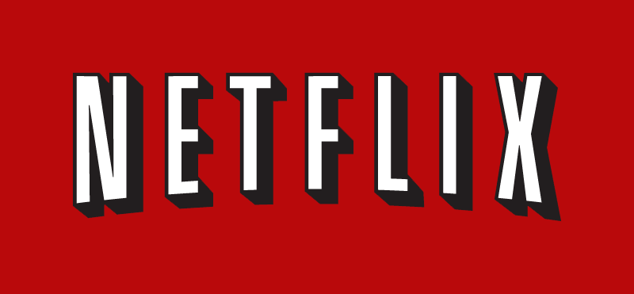

Favorite Websites
The New York Times
The New York Times is a newspaper website that features major US and international news. When first visiting the sight you are immedietly drawn to the top headline and accompanying picture that dominates the splash page. Scrolling down you will find assorted headlines followed by the classic newspaper sections (Business, Opinion, etc.)
The site is one of my favorites because of its content and layout. For someone who likes to stay informed, the Times provides an excellent overview of both domestic and international issues. I also find its layout far less cluttered and more appealing than other popular news sites such as CNN or even BBC. In the last year they have done an impressive job of revamping their site to make it less of a text repository for the traditional print paper and into a stand-alone news site. It happens to be the only text based content site I actually pay to use.
Facebook is a site I end up spending far too much time on. Although, to be honest, one minute is probably too much time on Facebook. After logging on my eyes are drawn to the "news feed" where, I admit, Facebook's algorithms generally do a fairly good job of finding content that draws me in.
I use Facebook for two fairly distinct reasons: looking at what people post and using the messaging app. Although the site looks fairly good, it has gotten noticeably more cluttered with "Suggested Posts" and the like over the last year or so. These are generally just blogspam that I ignore.
I would describe Facebook as a non-serious source of social news that has a sort of devious business model (monetizing your content). After using the site for a while I honestly feel a bit exhausted from the constant bombardment of content. However, due to its almost complete domination of the social media market, I find it hard to quit for any real amount of time.
Netflix
Netflix is a site I appreciate for its simplicity. There is only one reason to go there and they do their job very well. When first visiting, you are met with images of new shows and films or sometimes things Netflix thinks you will like. This is the one part of the website I find annoying and generally ignore. I go straight to either "My List" or the search bar to find what I want.
Netflix is, for the most part, very easy to browse. They lay out content by genre and have a good search function. The user interface is clean and uncluttered, unlike competitor Amazon Prime. They also have a good selection, although in recent years the amount of good films has declined. Overall, I consider Netflix a great site and for that reason it is one of the few sites I pay a monthly subscription to use.